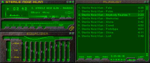

/ goodies : s n k
SNK Skin for WinAmp™
Click on the screenshot to download the ZIP file (161 Kb.) and copy it into your winamp/skins directory.

You can download the latest version of WinAmp from the official site linked below.
www.winamp.com